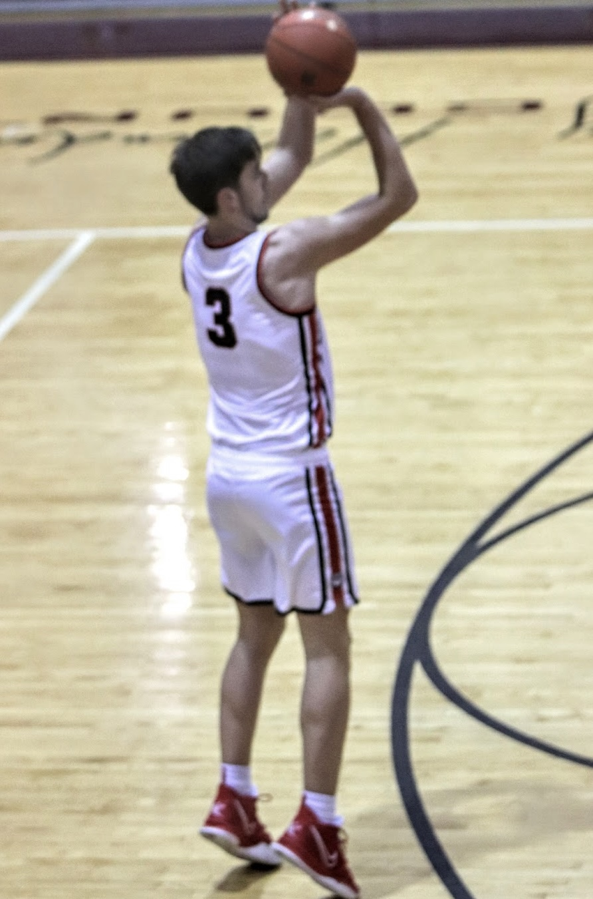

Since I was very young, I was also the tallest kid in the grade. I have great family history in basketball so I decided to focus all my time on basketball. I became a very solid player through hard work and playing on a lot of good teams. It was a great love of mine, unfortunately I had a couple a injuries along the way that caused a hold in my career. I had some chances to play in college but ended up choosing to go to a bigger school and get a good degree.
Growing up St.Louis I've been a die hard fan of these two teams. Which has caused me to love watching baseball and hockey. I think sports are always fun when you have a deep connection to your team. This is why I started collecting sports memorabilia as a hobby.
Click this Link to return home!